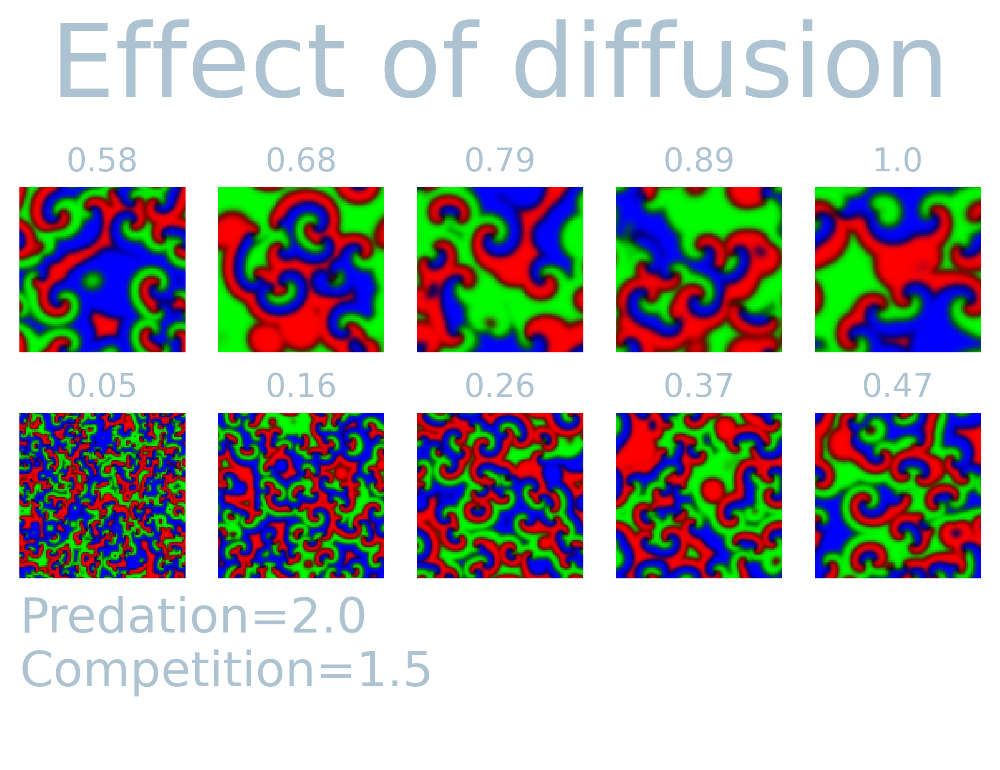
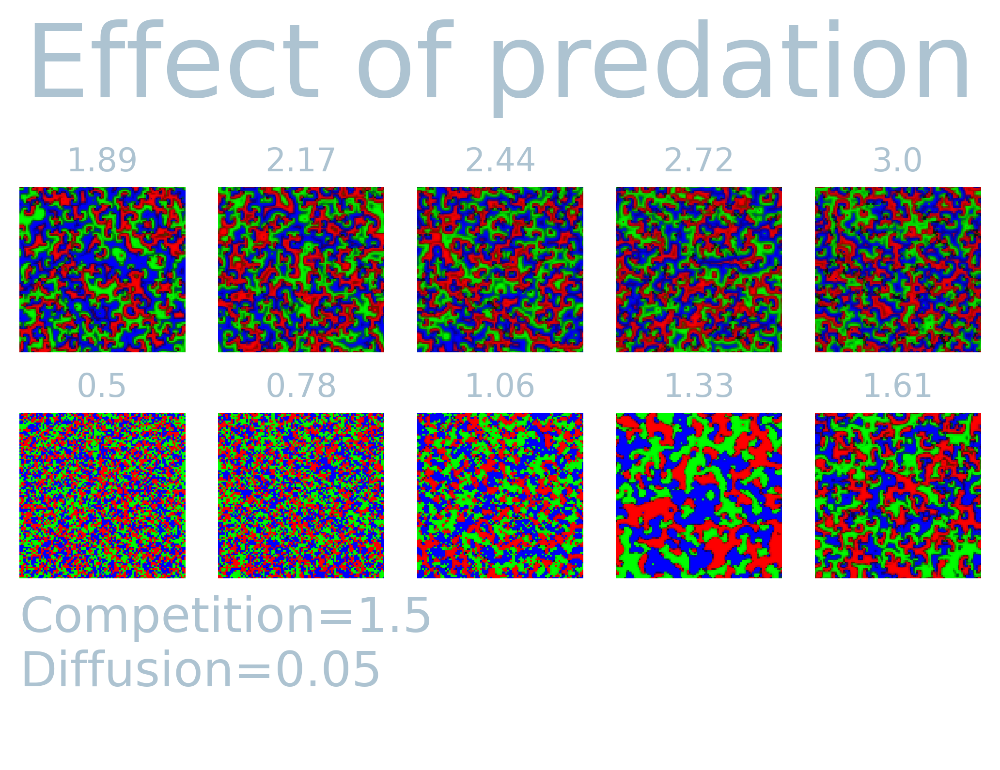

Some years ago an article was published using rock-paper-scissor dynamics to study the effects on biodiversity. Below is an implementation in a toolbox I wrote, simulated on a 100x100 grid with Moore neighborhood. The color (red, green, blue) are proportional to the density of the three species at each pixel (vertex point).
The model produces a wide range of different patterns based on three input parameters
Each vertex in the system \(\sigma_i \in \sigma :=\){ \(\sigma_0, \dots, \sigma_n\) } contains a vector with the density of the three “species”, i.e. rock (\(r\)), paper (\(g\)), or scissor (\(b\)). The concentration of each specie at vertex \(i\) is updated according to
\[ \frac{d \sigma_i}{dt} = \scriptstyle \begin{cases} \frac{dr_i}{dt}& = ((\underbrace{P (g_i - b_i) + r_i}\_{\textrm{predation}} - \underbrace{C (g_i + b_i) - r_i^2}\_{\textrm{Competition}})r_i - \underbrace{D(\sum_{<i,j>} r_j r_i)}\_{\textrm{mobility}}\) \delta t \\\\\\ \frac{dg_i}{dt}& = ((P (b_i - r_i) + g_i - C (r_i + b_i) - g_i^2)g_i - D(\sum_{<i,j>} g_j g_i)) \delta t \\\\\\ \frac{db_i}{dt}& = ((P (r_i - g_i) + b_i - C (r_i + g_i) - b_i^2)b_i - D(\sum_{<i,j>} b_j b_i)) \delta t, \end{cases} \]
where \(<i,j>\) indicates the nearest neighbors of variable \(i\).
Next, I simulated \(T=1000\) steps and visualized the last system state while varying predation, competition and diffusion while keeping the rest constant.
 
In the original paper, the authors apply a so-called Gillspie algorithm to efficiently sample the reaction between the different density. I was interested whether one can get away with “tradtiional” Monte-Carlo methods and implemented and agent-based approach to the model above.
Each agent updates stochastically with parameters - Mobility \(M \in [0, 1]\) - Reproduction \(R \in [0, 1]\) - Selection \(S \in [0, 1]\)
An agent can only reproduce if an adjecent vertex is dead. The other moves are updated sequently with the probabilities indicated above. In short, each agent can assume one of 4 states:
Each update step an agent interacts with a random neighbor and randomly chooses an interaction strategy random. That is, if the adjacent neighbor is empty, it could reproduce with probability \(R\), otherwise it may attempt kill the neighbor with probability \(S\). Lastly, it could inhabit the neighboring site with probability \(M\). Note that the total set is a pair of (mobility, selection or reproduction).
We then yield the following for \((M, R, S) \rightarrow 2.5:1.5:.05 = 1.3:1:0.03 \rightarrow (.5, .66, 0.016)\):
This maintains the circular behavior found in the original paper, however this does not employ the Gillspie algorithm. This will be the topic of some future post.